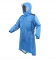

超强防水材料，背部空间宽广，可在背负情况下穿着帽子前沿加长，放斜雨吹进，前沿透明材料避免遮挡视线采用防水拉链，防雨无缝有口袋可方便装随身物品配精致收纳袋，不用时收藏方便
5分
终于找到款外观比较好看的雨衣了，重要的是背着摄影包也能穿上，松紧带的设计让防雨性能提升很多，还设计了贴身的口袋，简直能当外套穿
透气性还能再好一点
4分
设计合理，很人性化
略贵
4.5分
透气性不错 设计很人性化，有松紧带，松开后能背着包穿上雨衣 修身设计很帅气
有些重